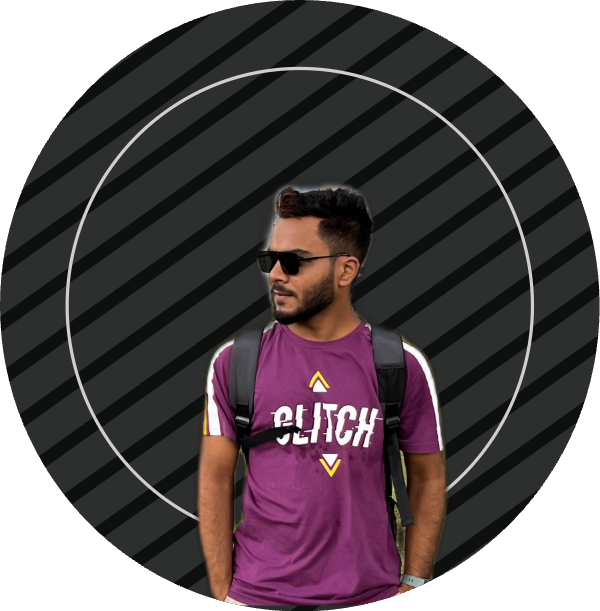

Sohrab Rayhan

Software Engineer (Backend)
Software Engineer (Backend)
CSE Student & Backend Engineer. I build scalable systems using Python and C. Currently focused on Data Structures and Cloud Architecture.
Focusing on Microservices, System Design, and Scalability.
Optimized Python solutions focusing on O(n) complexity.
Minimalist personal site hosted on GitHub Pages.